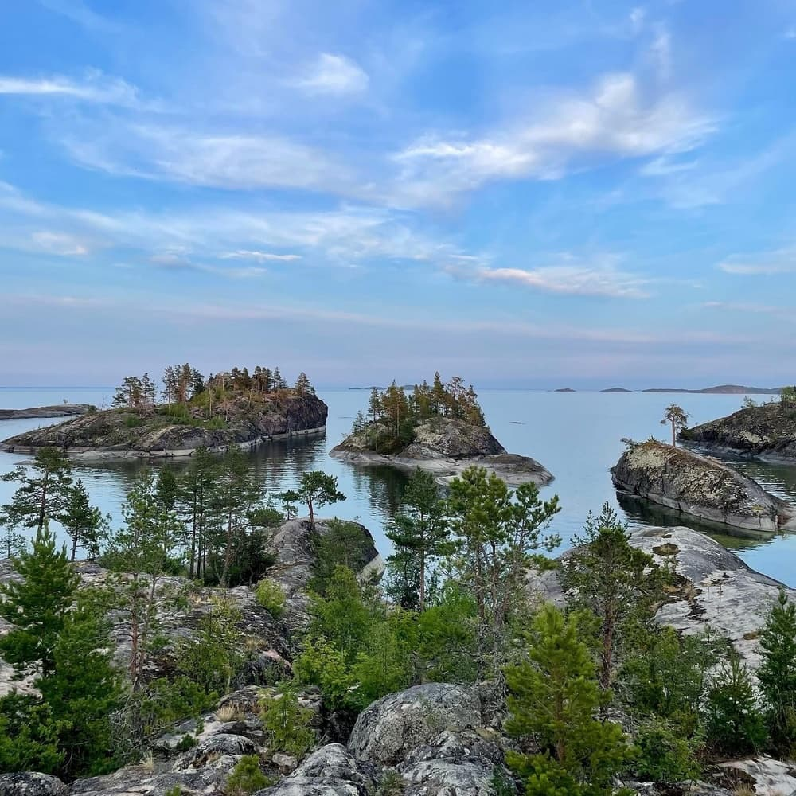
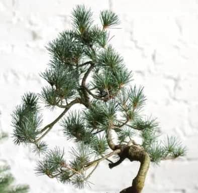
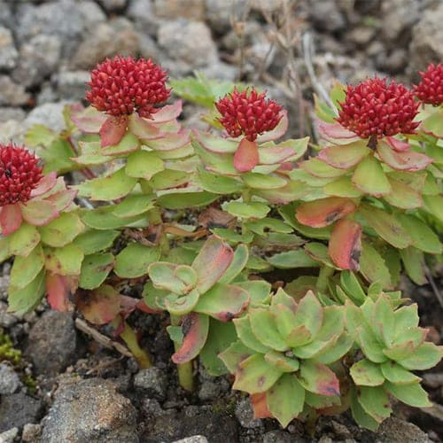
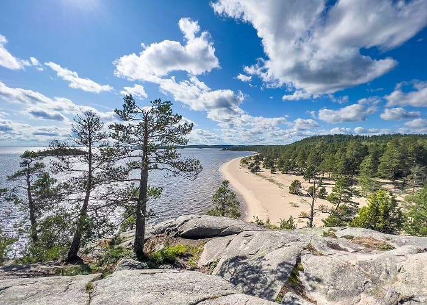

Мы с другом открыли для себя замечательное место на северо-западной Ладоге. Ладожские шхеры своей красотой соперничают с фьордами Норвегии. Стали посещать его каждым летом, в дальнейшем и другие попутчики подтянулись.
В тот год нас было трое на резиновой лодке.
Там имеется остров крупный, вокруг мелкие.
Мы расположились на одном из мелких, чтобы избежать публики.
Это был июль. Жара, вода теплющая, солнце хлещет, Ладога ласковая. Пару дней мы безобразничали на островке, лежа организмами на своем камне (остров представляет собой единый каменный массив), пока кости не прожарились до состояния отвала от них мяса.
На острове несколько полноценных сосен, но в основном низкорослые и настолько корявые (высотой до полуметра), что японский мастер искусства "бонсай" горько бы заплакал.

Среди трав встречается "Родиола розовая" — лекарственное растение, которое обитает в регионах с холодным и умеренным климатом.

Решили разнообразить.
Собрали все в лодку и отправились в сторону большого острова.
Движимся медленно, т.к. на веслах. В ту пору все уже передвигались на современных катерах с мощными Yamaha за кормой. Чудаков, вроде нас, совсем не было.
Озеро играет бликами, мы нежимся как коты на батарее, ветерок обдувает, небо синющее.
Периодически из воды высовываются черные бóшки, похожие на небритых водолазов — это любопытные нерпы.
Перед нами вываливает большой роскошный остров. Глазам открывается песчаный пляж в обрамлении сосен, на пляже люди. Их не очень много, но есть. Мы абсолютно не слышим посторонних звуков, только всплеск весел. Получается немое, цветное кино.

С удивлением обнаруживаем, что люди на пляже в основном голые. Детишки полностью, женщины без лифчиков все, отдельные, если молодые и стройные, полностью без одежды, мужчины по-разному.
Обращаем внимание на группу молодых людей странного поведения. Это юноши, объединенные в группу под командой командира. Все сидят рядком на корточках вдоль берега лицом к морю, т.е. к нам. Командир их напутствует чем-то поучительным, энергично двигая руками в локтевых суставах. Парни без трусов и яйца свисают до горячего песка.
Вдруг, командир дает команду, отделение дружно вскакивает и построившись в колонну следует за ним в направлении леса. Почти дойдя, ведущий резко тормозит и колонна натыкается друг на друга. Направляющий разворачивается и группа возвращается обратно к воде. Тут старшóй находит и одевает свои трусы. Бойцы делают то же и колонна возобновляет движение к лесу.
Мы видим множество полуголых и голых женщин. Они занимаются своими делами: варят суп, жарят–парят, строгают салаты и пр. Нас для них просто нет. Мужчин значительно меньше. Вероятно, "отдыхают".
На противоположной стороне бухты высокий скалистый остров. По гребню шагает некий гуру: в трусах, сухопарый, высокий, борода развивается как мочалка. Он периодически останавливается направляет руки к Солнцу и излагает тайные знания. Потом пробежит, и вонзив палец в небо изрекает. За ним бежит толстая согбенная тетка в шляпе и все записывает-записывает.
Гуру все пророчествует и пророчествует. Тетка все записывает и записывает.
Я думал такие сюжеты бывают только в кино.
Наконец мы покидаем эту бухту и оказываемся в безлюдном месте, и тоже с пляжем. Разводим костер, ставим палатку, плещемся в воде, как тюлени в возрасте пубертата, освежаемся кальвадóсом (это самодельная яблочная водка с садов Ингерманландии; назовем его – ингридóс). Его у нас было.
Изготовились отходить ко сну. Нащупываю в кармане ключи от машины, а машина не моя, а моего друга.
Я ему говорю: Георгий! Дело серьезное! Вот ключи! Сохрани! Иначе, мы тут до зимы проведем!
Георгий глянул трезво и повесил ключи вокруг шеи на "хлястик".
Потом спали в палатке.
Ночью меня поманило выйти. А июльские ночи в тех краях: "Одна заря сменить другую / Спешит, дав ночи полчаса". Вышел. И вопреки тому, чтобы тут и решить проблему, догадал меня чёрт отправиться в гущу.
Бродил заячьями петлями и зигзагами. Наконец лес меня остановил. Стою и занимаюсь тем, за чем пришел. Глаза мои из заплывших китайских превращаются в стопудовые русские, что твои полтинники. Вижу, валяются ключи от машины и паспорт хозяина.
Забрал. Пошел спать. Утром ему предъявил. Он забрал и сказал: на вдохе — уууу... ффф. На выдохе — пуууу... ффф.
У меня не было желания изгаляться. К тому же "индейцы племени Сиу почитают за моветон обижать малохольных". В результате я не узнал с какой целью мой товарищ забросил ключи в гущу леса. Но этого ему не хватило — он еще свой паспорт присовоку́пил.